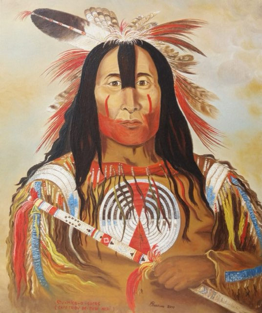
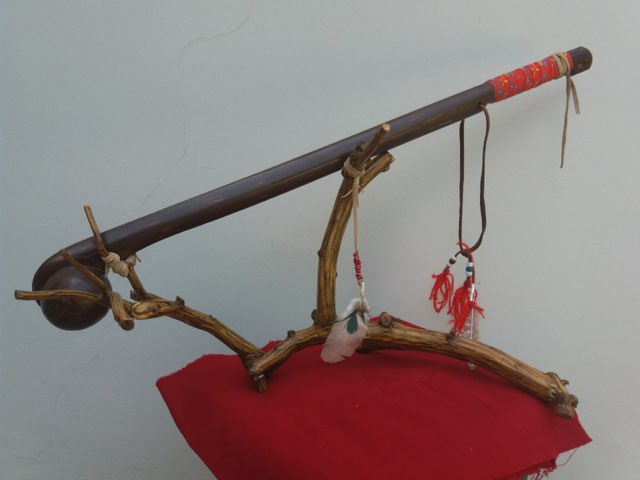
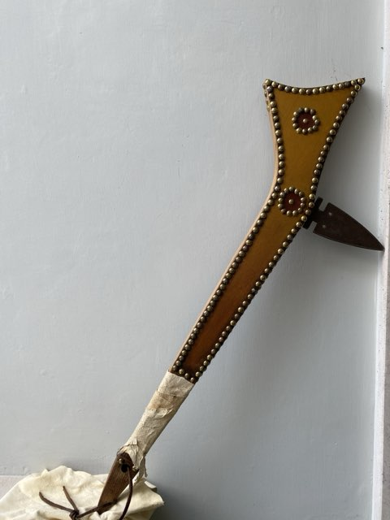
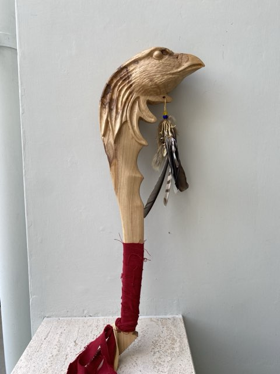
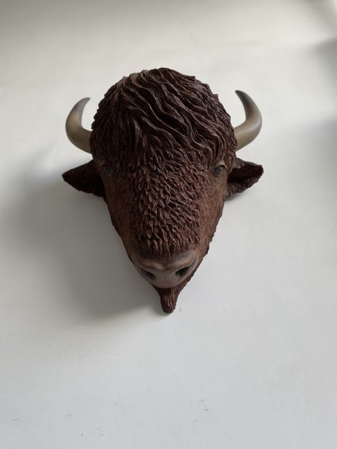
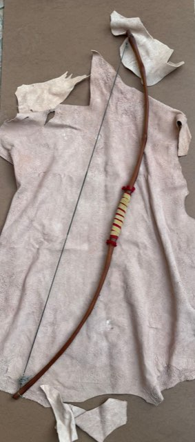
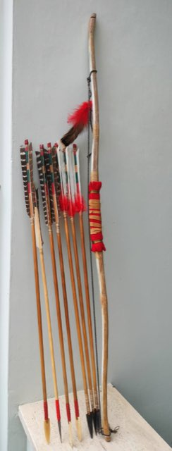
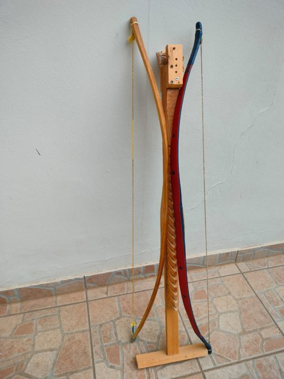

Stu-mick-o-suks
capo tribù dei piedi neri (Catlin). 60×50. 2017. Olio su tela.
La passione
Quando ancora in Svizzera, Bertino rimase fortemente colpito da delle riproduzioni di Indiani d’America viste su di un’enciclopedia di un amico. Quei volti scolpiti, quell’attaggiamento coraggioso e fiero rimasero per sempre impressi nella sua mente.
Crescendo questa passione venne coltivata attraverso lo studio a scuola e a casa, cercando di apprendere sempre più cose possibile, mosso da una curiosità insaziabile. Quest’amore nel tempo lo porta a vincere dei premi nelle competizioni di disegno a tema ed a riprodurre (con un’attenzione maniacale verso i dettagli) utensili ed oggetti relativi a quel periodo.
In questa pagina potrai osservare meglio tutte le sue riproduzioni, approfondendone i dettagli.
Le riproduzioni
Ogni pezzo è ricostruito con i materiali e le tecniche originali. Tocca una foto per ingrandirla.

capo tribù dei piedi neri (Catlin). 60×50. 2017. Olio su tela.


stile della Regione dei Grandi Laghi.
Leggi la scheda →

stile dei Grandi Laghi Occidentali (o delle Pianure).
Leggi la scheda →

nello stile della regione dei Grandi Laghi (o Praterie). Da un incisione del 1853 di Seth Eastman. Dimensioni: 55x12x3 cm.
Leggi la scheda →
tribù Dakota,1840, 80cm circa, lama 13cm.
Leggi la scheda →
62cm circa (solo scultura) bassorilievo in terracotta su telaio in legno decorato.



lungo 121 cm. A 17 pollici di allungo, sviluppa una potenza pari a 51 libbre,
Leggi la scheda →
composito corno- legno di osange e tendine animale. Lungo 112 cm, sviluppa 41 libbre a 15 pollici di allungo.
Leggi la scheda →